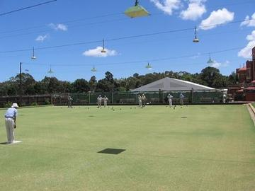

Home / Age of Contact and Craft / Celtic and Atlantic Europe
Encyclopedia ID 1179
Skittles
Skittles (Old English / Table / Long Alley) · Table skittles · Northamptonshire skittles
Knock pins down by throwing a ball or cheese; many regional forms from alley skittles to Northamptonshire table skittles.
Heritage note
Part of the living heritage of United Kingdom, Germany, Liechtenstein.
Origins
Usually placed in the era of Age of Contact and Craft (about 1500 to 1800), although its exact origins are uncertain, within the cultural world of Celtic and Atlantic Europe.
Play it
Sources
Related entries
Pub darts
United Kingdom · Street and playground games
Gorodki
Russia · Dexterity and skill games
Lawn bowls
United Kingdom +2 · Dexterity and skill gamesKyykka
Finland · Street and playground games
Candlepin bowling
United Kingdom +1 · Dexterity and skill games
Frisian Road Bowling
Ireland +2 · Dexterity and skill games